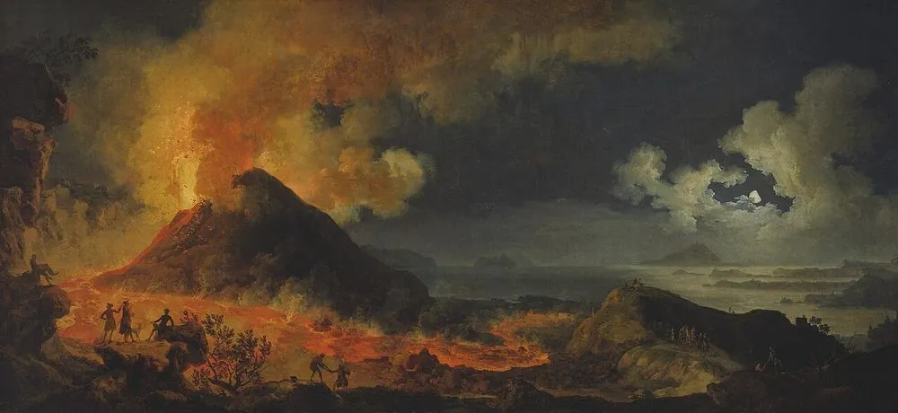

볼프강이 누나에게 · 1770년 5월 19일
모차르트의 편지 · I장 이탈리아 · Neapel

첫 문장 낭독 듣기 (독일어)
원문과 번역
Der 12te Menuett von Haydn, den Du mir geschickt hast, gefällt mir recht wohl, und den Baß hast du unvergleichlich dazu componirt, und ohne mindesten Fehler.
누나가 보내 준 하이든의 열두 번째 미뉴에트, 아주 마음에 들어. 거기 붙인 베이스는 비할 데 없이 잘 지었고, 틀린 데도 하나 없어.
Schreibe mir, wie es dem Herrn Canari geht. Singt er noch? Pfeift er noch?
카나리아 나리는 어떻게 지내는지 알려 줘. 아직 노래해? 아직 휘파람 불어?
Weißt Du, warum ich auf den Canari denke? Weil in unserm Vorzimmer einer ist, welcher ein G'seis macht, wie unserer.
내가 왜 카나리아 생각을 하는지 알아? 여기 우리 곁방에도 한 마리 있는데, 우리 애처럼 올림 솔 소리를 내거든.
Gestern haben wir unsere neuen Kleider angezogen; wir waren schön wie die Engel.
어제 새 옷을 입었어. 우리 둘 다 천사처럼 멋졌지.
Die Königin und den König haben wir unter der Messe zu Portici in der Hofcapelle gesehen, und den Vesuvius haben wir auch gesehen. Neapel ist schön, ist aber volkreich wie Wien und Paris.
포르티치 궁정 예배당 미사에서 왕비와 왕을 봤고, 베수비오 화산도 봤어. 나폴리는 아름다운데, 빈이나 파리처럼 사람이 북적여.
편지에서 고른 문장들입니다. 번역은 언어 미술관이 새로 썼습니다.
그림은 볼프강이 본 바로 그날이 아니라, 같은 시절 베수비오 화산의 분화를 그린 1777년 그림이에요. 편지 첫머리는 이탈리아어로, 연습 삼아 썼어요. 나폴리 왕 부부를 본 포르티치는 베수비오 화산 기슭의 왕궁이 있는 곳이에요. 이 편지를 엮은 놀은 모차르트가 동물을 무척 좋아해 나중에도 늘 방에 새를 두었다고 적었어요.
앱에서는 이 편지가 메신저처럼 한 줄씩 도착하고, 낱말마다 뜻이 함께 나와요. 편지 속 인물과 짧게 말해 보는 회화도 있어요. I장은 무료예요.
출처
- 그림: Pierre-Jacques Volaire · Der Ausbruch des Vesuvs · 1777 · Art Institute of Chicago (1978.426) · Public domain · 원본
- 편지 원문: Mozarts Briefe (L. Nohl, 1865), Nr. 12 · public domain · archive.org
- 낭독 음성: Supertonic 3 (Supertone Inc.) 로 만들었습니다 (모델 라이선스 OpenRAIL-M).
- 모든 출처: 언어 미술관 출처와 라이선스